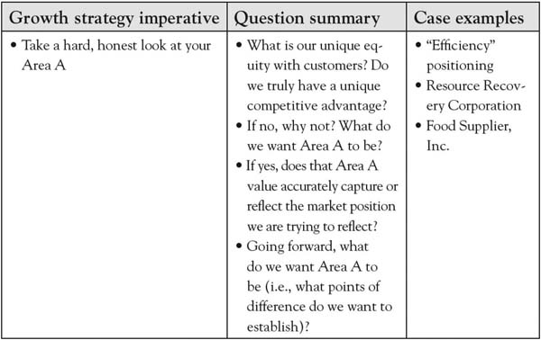

The following questions are among the most essential that one can ask about the business that can be answered by the customer value analysis you have completed:
To illustrate a common finding, consider a manufacturer who has, for the past several years, touted its efficiency as its primary point of difference. The firm’s management has been consistent in communicating this priority both internally (mission statement, coffee cups, posters on the wall) and externally with distributors and customers, proud of the fact that it is the “most efficient in the industry.” Then, in a 3-Circle growth project, some leaders in the firm discover the surprising insight that customers only care about the firm’s efficiency if they see some benefit from it. In some ways, the firm’s promotion of its efficiency is almost resented by some customers who do not believe they see anything being passed down in the way of lower costs or greater efficiency for them. Recall similar cases in this book (e.g., Resource Recovery Corporation, Food Supplier, Inc.) in which executives discovered that their Area A was not nearly as large and distinctive as they had envisioned. So the first step in plotting growth is to get a clear understanding of your current Area A, being open to the possibility that customers may not view you as you think they do. As noted in Chapter 5 "Sorting Value", an important element of this assessment is identifying where you currently reside in consumers’ minds on the value map. Figure 6.4 "First Priority in Growth Strategy: Assess Your Area A" summarizes this first priority.
Figure 6.4 First Priority in Growth Strategy: Assess Your Area A
